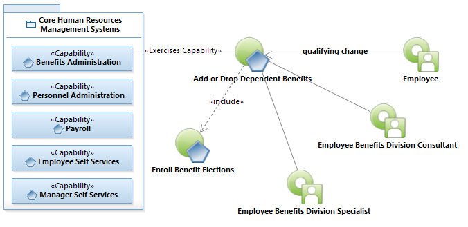

Use Case Model: Add or Drop Dependent Benefits
Architect: Rob Byrd, Chief Enterprise IT Architect
Date Last Modified: 05/15/2012
User Review: Andrea Glasper, Benefits Specialist
User Review Date: 06/22/2012
During the year employees have life changing events such as marriage, birth of a child, loss of coverage, etc. It’s these types of events that allow the employee the opportunity to make a change in their current benefit elections by either adding or dropping a dependent. Once a qualifying event has been established the employee would visit with Employee Benefits Division and complete a Benefits Enrollment Form to make any changes. The Benefits Enrollment Form would be keyed into Banner and appropriate premium deductions are taken. The insurance carrier is notified of the change and sends out appropriate ID cards.
Follow link to Role Definitions

Use Case Model: Add or Drop Dependent Benefits
Follow link to Enroll Benefit Elections
Activity Model: Add or Drop Dependent Benefits